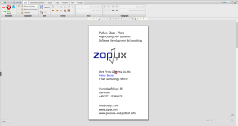

DOCX ↔ XML conversion
Convert Word manuscripts to Docbook or DITA, validate them, publish HTML previews, and regenerate DOCX through the C-REX-powered round trip.
Flowbite refreshed design
XML-Director connects Word manuscripts, Plone, XML databases, and high-quality print output through a single Flowbite-powered interface. Convert DOCX to XML, manage versions, and deliver precise layouts without vendor lock-in.
Why teams switch
"XML-Director shrank our publishing cycle from weeks to hours without compromising print quality."
— XML-Director customer feedback
Overview
XML-Director provides a unified, Flowbite-styled interface for technical documentation teams, guideline authors, laboratories, and publishers who demand a predictable XML workflow.
Fiction, manuals, SOPs, quality documentation, and technical literature all benefit from the same workflow.
Unified workflow
Manuscript → XML → Publish
Upload manuscripts, convert them to XML, run validation, generate PDF & EPUB, and publish across channels from a single dashboard.

Feature Highlights
Every capability from the classic XML-Director site is still here, now refreshed with Tailwind + Flowbite components.
Convert Word manuscripts to Docbook or DITA, validate them, publish HTML previews, and regenerate DOCX through the C-REX-powered round trip.

Manage uploads, conversions, QA gates, and distribution with role-based permissions and workflow definitions tailored per content type.

Drive PDFreactor, PrinceXML, Antennahouse, or Vivliostyle with CSS, XSL-FO, or hybrid styling to deliver press-ready output that matches your brand.
Workflow
Flowbite's timeline component visualizes the actual XML-Director pipeline.
Drag DOCX manuscripts or XML collections into Plone, assign metadata, and pick the right workflow template.
C-REX, LibreOffice/unoconv, and custom converters map content to Docbook, DITA, or bespoke schemas while Schematron, Relax NG, XML Schema, and DTD validation guard quality.
Use XSLT pipelines plus CSS Paged Media to produce responsive HTML, EPUB, or high-end PDFs and push them to BaseX, eXist-db, OwnCloud, Dropbox, Amazon S3, or local storage.
Trigger social posts, update documentation portals, or send regulatory packages; every change stays versioned and auditable.
Capability matrix
The classic feature matrix is distilled into easy-to-scan Flowbite cards.
Media & demos
Screenshots and screencasts show how Flowbite styling modernizes the original UI.



References
ZOPYX has implemented XML-Director and Produce & Publish solutions for customers worldwide.


Download & availability
Install from PyPI, configure through the web, and benefit from the same production setup already running at multiple customers.
Latest release: xmldirector.plonecore on PyPI
Installation docs: How to install · Demo setup
Subscribe to the XML-Director newsletter for release news and tutorial videos.
Past issues live in the newsletter archive.
Developer model
XML-Director lives on GitHub under the GPL (v2). We strive for clean code, automated tests, and complete documentation.
Spin up a local instance or explore the hosted demo.
Then browse to http://localhost:12020/xml-director and log in with demo / demo.
Hosted demo: demo.xml-director.info
Submit pull requests, co-fund features, or share integration components.
Partners & providers
Germany-based experts for technical documentation, DITA projects, and DOCX↔XML conversions. They provide C-Rex.net as a DOCX conversion web service.
Consultant and FrameMaker expert supporting enterprise XML migrations across Germany.
Document analysis and conversion service for ebook, PDF, and InDesign workflows.
bookalope.netAbout XML-Director
Andreas has spent two decades delivering publishing and CMS projects across Europe. XML-Director was created to put professional XML tooling within reach—without proprietary lock-in or inflated licensing.
As head of ZOPYX, he's delivered multilingual EU projects, worked with major publishers, and continually evolves XML-Director based on real customer needs.

Developer & Project lead
Andreas Jung / ZOPYX
Hundskapfklinge 33
72074 Tübingen, Germany
P: +49-7071-793376